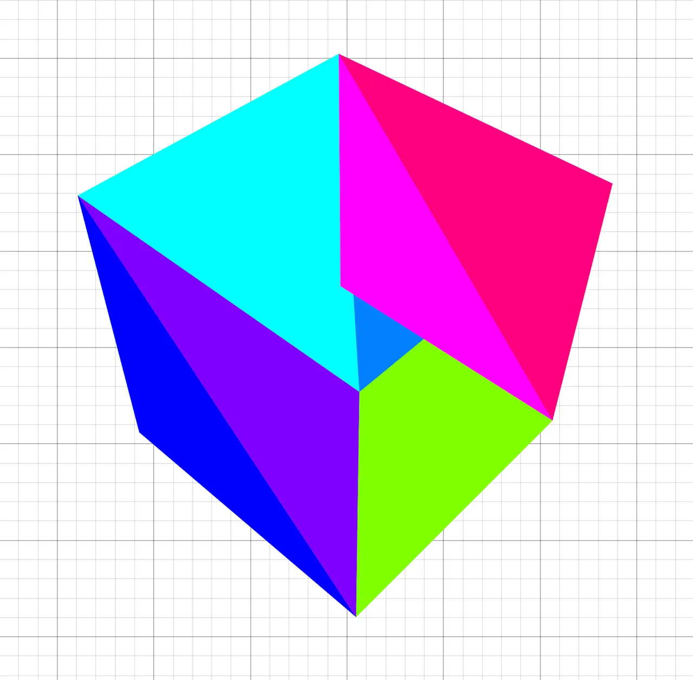
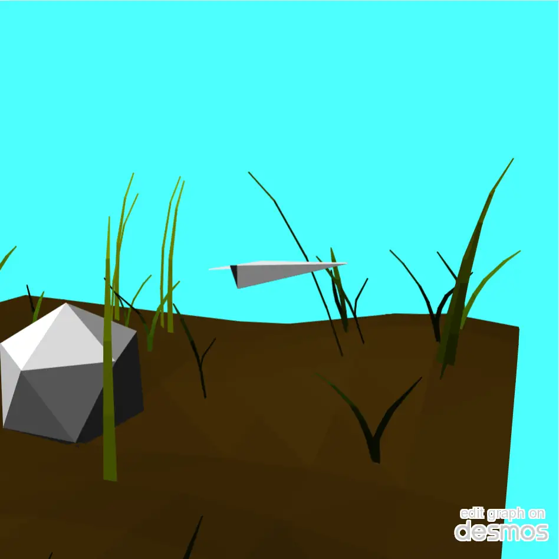

       
<div id="3d-renderer-desmos" class="cnt">
  <div>
    <h1>a 3d renderer in 2d desmos</h1>
    <h2>11 may 2024</h2>
    <separator></separator>
    <h3>update 18/5/2025</h3>
    <p>this graph is featured in the 2024 desmos art expo! check it out on <a href="https://desmos.com/art#17">desmos&apos;s art page</a>.</p>
    <p>this project started seven months ago, when my precalc teacher told us about his brilliant assignment: make an artistic graph in the desmos graphing calculator. i knew i wanted to make something in 3d, but i didn&apos;t get it working in time, so i ended up making this <a href="https://www.desmos.com/calculator/5pgpochvby">monstrosity</a>.</p>
    <p>about a month ago, he had us make another graph, and i knew i wanted to one-up myself. i thought back to that 3d renderer i tried to implement but failed to get working, and tried to fix it up!</p>
    <p>in this <a href="https://www.desmos.com/calculator/gulcaggspf">graph</a> you can see my first attempt at a perspective projection in desmos.</p>
    <h3>getting over desmos&apos; quirks</h3>
    <p>to get to this point, i had to jump over so many hurdles. for one, desmos doesn&apos;t support lists of lists, which makes doing any operation that requires multiple positions clumsy. the best way i&apos;ve come up with to mitigate this is to store one list for each component of the calculation.</p>
    <p>the lack of lists of lists also makes representing matrices annoying. i settled on flattening out the list and using the formula <code-span>matrix[row * width + column]</code-span> to get the value of the cell.</p>
    <h3>the issue with my first attempt</h3>
    <p>well, as it turns out, through all my years of graphics programming up to that point, i had never actually learned how the perspective matrix worked! the whole thing was a really humbling experience for me and it got me to read up more on the math, hidden behind wrappers, that i&apos;ve been using so often.</p>
    <p>the missing step was the divide by w, which is integral to getting the perspective distortion that brings objects closer to the center of the screen the farther they are away. the w value is set to the actual z value, whereas the z value is mapped from the interval [near, far] to [0, 1], which is why my previous attempt that divided by z didn&apos;t look correct.</p>
    <h3>loading 3d models</h3>
    <p>the next hurdle was getting 3d models from blender into the graphing calculator. for this, i used a separate program in c that used assimp to parse files and spit out various lists ready to copy and paste into desmos.</p>
    <p>alright, i&apos;ve got the data now. time to render it! because i used the vertex/index buffer format that opengl uses, it was simple to get all the polygons rendered like so.</p>
    <code-box><code-lang>desmodder script</code-lang><code-body>polygon&lpar;<br/>  f_transform&lpar;<br/>    M_world2ndc,<br/>    x_vbo[i_vtx0],<br/>    y_vbo[i_vtx0],<br/>    z_vbo[i_vtx0]<br/>  &rpar;,<br/>  f_transform&lpar;<br/>    M_world2ndc,<br/>    x_vbo[i_vtx1],<br/>    y_vbo[i_vtx1],<br/>    z_vbo[i_vtx1]<br/>  &rpar;,<br/>  f_transform&lpar;<br/>    M_world2ndc,<br/>    x_vbo[i_vtx2],<br/>    y_vbo[i_vtx2],<br/>    z_vbo[i_vtx2]<br/>  &rpar;<br/>&rpar;</code-body></code-box>
    <p>great! we&apos;ve got a working renderer now.</p>
    <div class="centerer"></img></div>
    <p>oh.</p>
    <h3>implementing depth sorting</h3>
    <p>well, it&apos;s time to implement depth sorting! i&apos;ll describe my &lpar;slow&rpar; first attempt in detail here, and later on i&apos;ll go over optimizations. the main idea is this: if we draw the triangles in order from front to back, then the triangles in the back will be occluded by the triangles in front, like they&apos;re supposed to!</p>
    <p>in order to implement this, i used the centroid of the triangle as its position and projected each of them to use its z position in ndc as its depth.</p>
    <code-box><code-lang>desmodder script</code-lang><code-body>t_centroidX =<br/>  (x_vbo[i_idx0] + x_vbo[i_idx1] + x_vbo[i_idx2]) / 3<br/><br/>t_centroidY =<br/>  (y_vbo[i_idx0] + y_vbo[i_idx1] + y_vbo[i_idx2]) / 3<br/><br/>t_centroidZ =<br/>  (z_vbo[i_idx0] + z_vbo[i_idx1] + z_vbo[i_idx2]) / 3<br/><br/>t_depths = -f_z3(T, t_centroidX, t_centroidY, t_centroidZ)</code-body></code-box>
    <p>here&apos;s where my first implementation gets a bit dumb. i had to sort the indices for each triangle, but keep the indices together.</p>
    <p>so i did the most straightforward thing!</p>
    <code-box><code-lang>desmodder script</code-lang><code-body>t_keys =<br/>  [t_depths[floor(i / 3) + 1] for i in 0..t_depths.length / 3]<br/><br/>i_sorted = sort(i_ibo, t_keys)</code-body></code-box>
    <p>that actually works, but it&apos;s slow because it allocates so many lists and sorts 3x the data it needs to. oh well, let&apos;s implement lighting now and optimize later!</p>
    <h3>phong shading</h3>
    <p>to really cap it all off, i added the phong shading model to the renderer, which is a fast approximation for proper lighting that really sells the 3d effect.</p>
    <code-box><code-lang>desmodder script</code-lang><code-body>t_spec =<br/>  max&lpar;<br/>    f_dot3v&lpar;<br/>      t_viewDirX / t_viewDirNorm,<br/>      t_viewDirY / t_viewDirNorm,<br/>      t_viewDirZ / t_viewDirNorm,<br/>      l[1] - 2 * x_norm * t_dotNormIncident,<br/>      l[2] - 2 * y_norm * t_dotNormIncident,<br/>      l[3] - 2 * z_norm * t_dotNormIncident<br/>    &rpar;,<br/>    0<br/>  &rpar; ^ 32<br/><br/>t_l =<br/>  sort&lpar;<br/>    0.1 + max&lpar;<br/>      x_norm * -l[1] + y_norm * -l[2] + z_norm * -l[3],<br/>      0<br/>    &rpar; + t_spec * 0.3,<br/>    t_depths<br/>  &rpar;</code-body></code-box>
    <h3>the final result</h3>
    <a href="https://www.desmos.com/art-2024#17;n7r5dqo9w5">
      <div class="centerer"></img></div>
    </a>
    <separator></separator><p style="margin-bottom: 0;padding-bottom:0;">that&apos;s the end of this post. thanks for reading!<br/><a href="#intro">back to top &#x2934;</a></p>
  </div>
</div>
